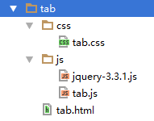

五、案例：可编辑的表格
5.1、先设置html和css

1 | <!--在head区引入css和js文件--> |
1 | <table> |
css编写：
1 | *{ |
效果：

5.2、完成隔行换色
1 | /*页面载入事件*/ |
5.3、找到包含人名的td，绑定单击事件
1 | /*页面载入事件*/ |
5.4、创建input并放到td中
1 | /*页面载入事件*/ |
5.5、为input绑定事件
1 | ///////////// 在input.focus();这行代码之后 /////////////////// |
5.6、案例总结
- 事件绑定：
$('td:odd').click(function(e){}); - text()、html()、val()三个方法，不填参数表示获取元素的内容或value值。填参数表示设置元素的内容或值。
- css()方法，填一个参数表示获取元素的样式；填两个参数表示设置元素的样式。
- append()、appendTo()表示追加元素到另一个元素内部。
六、案例：纵向导航菜单
6.1、HTML布局和css样式

head区引入css和js文件：
1 | <link rel="stylesheet" href="css/menu.css"> |
html代码：
1 | <ul> |
css样式：
1 | *{ |
6.2、js代码
jQuery效果：
- 单纯的显示隐藏：
- show()
- hide()
- toggle()
- 上下滑动式的显示隐藏
- slideDown()
- slideUp()
- slideToggle()
- 淡入淡出的显示隐藏
- fadeIn()
- fadeOut()
- fadeToggle()
- fadeTo(透明度) – 将透明度切换到指定的值
1 | //页面加载完毕，执行 |
6.3 案例总结
点击菜单(a链接)，让其对应的子菜单区域显示或隐藏
七、案例：横向导航菜单（下拉菜单）

7.1、HTML+css效果
head区引入css和js文件：
1 | <link rel="stylesheet" href="css/menu2.css"> |
1 | <ul id="menu2"> |
css代码：
1 | *{ |
7.2、实现下拉效果方法一
1 | //页面载入事件 |
7.2.1、mouseover和mouseenter事件对比
这两个事件都是鼠标移入事件，对应的离开事件分别是mouseout和mouseleave。
mouseover事件，鼠标放上去，执行一次事件，当鼠标移入元素的子元素上==会==再次触发该事件。
mouseenter事件，鼠标放上去，执行一次事件，当鼠标移入元素的子元素上==不会==再次触发该事件。
1 | <head> |
7.3、使用hover事件并加入定时器
解决：光标快速经过对象时，也会无误的触发对象的事件
1 | //页面载入事件 |
7.4 案例总结
横向菜单，通常不需要点击，而是光标经过。
所以，需要处理，光标移入和光标移出事件。
个别细节需要处理：
- 如事件对象中的子元素会再次触发事件；
- 光标快速经过时，也会触发事件
八、案例：标签页(选项卡)效果

8.1、html+css布局
head区引入css和js文件：
1 | <link rel="stylesheet" href="css/tab.css"> |
HTML代码：
1 | <ul> |
css代码：
1 | *{ |
8.2、js代码
1 | $(document).ready(function(){ |
8.2.1、each用法
1 | //用法一： |
8.3 案例总结
标签页(选项卡)：为选项卡的每个标签绑定事件，触发事件时，设置标签样式和对应的内容区样式(显示)，其它未触发的标签和内容区样式不同。
七、案例：无刷新分页+可编辑表格
1、分页原理
获取province表所有的数据：select * from province;
假设每页显示4条，用 $pageSize = 4;表示
用变量 $p = $_GET['p'] ?? 1; 表示当前的页码
获取第1页数据的SQL：select * from province limit 0,4;
获取第2页数据的SQL：select * from province limit 4,4;
获取第3页数据的SQL：select * from province limit 8,4;
获取第$p页数据的SQL：select from province limit ($p-1)$pageSize , $pageSize;
2、先开发一个列表页，带分页
创建list.php:
1 | <body> |
css样式：
1 | *{ |
效果：

在list.php开头的位置，写php代码，获取带分页的数据：
1 | $pdo = new PDO('mysql:host=localhost;dbname=test;charset=utf8', 'root', '123'); |
下面html中，循环tr，显示数据：
1 | <table> |
到此位置，刷新页面，能够看到第一页的数据了：

下面继续在list.php中，写php，完成页码制作：
1 | /*************** 下面制作分页样式 **************/ |
然后在html中，把分页放到p标签中：
1 | <p align="center"> |
3、无刷新的分页，获取第1页数据
页面访问html页面即可，php页面用于返回数据，返回给ajax的请求。

把原list.php中的html代码剪切到list.html中，形成两个文件。
两个页面工作原理是，浏览器访问list.html，list.html中需要的数据通过ajax请求到list.php中去获取。
下一步，在list.html中，当页面加载完毕，向list.php发送ajax请求，请求第1页的数据。
list.php，返回浏览器请求的数据：

当访问list.html的时候，能够通过浏览器工具，查看到返回的内容：
接下来只需要处理返回的data到页面即可。
1 | //页码加载完毕，请求第1 页的数据 |
4、获取其他页数据
目前点击下一页，会刷新页面，和目标无刷新的分页不相符。所有把所有超链接的href属性全部写javascript:void(0); ，原来的href的值写到page属性上。
修改list.php
1 | /*************** 下面制作分页样式 **************/ |
再次发送ajax请求，查看浏览器工具：

现在，点击页面中的“上一页”和“下一页”确实不会刷新页面，但是不会有新的数据，所以下一步，点击“上一页”和“下一页”的时候，要继续发送ajax请求，请求对应的数据。
1 | //因为a是后来加载到页面中的，所以必须用on来绑定事件 |
5、可编辑的表格
可编辑的表格，想要获取tbody中的元素，不可以，因为tbody中的tr和td都是后来加载到页面上的，所以得在ajax处理函数中，才能获取到tbody中的tr或td。
为了方便，封装处理数据的方法：
1 | /************ 封装一个处理ajax返回数据的函数 ***************/ |
下一步，在chuli函数中，做可编辑的表格：
下面是完整的处理方法
1 | /************ 封装一个处理ajax返回数据的函数 ***************/ |
edit.php
1 | $pdo = new PDO('mysql:host=localhost;dbname=test;charset=utf8', 'root', '123'); |
修改成功，加入提示：
edit.php返回执行的结果：
1 | $pdo = new PDO('mysql:host=localhost;dbname=test;charset=utf8', 'root', '123'); |
js代码，按回车后，给出提示：
引入layer.js

判断，并提示：
五、案例：自定义弹出窗口插件
5.1、创建demo.html，并写好css
1 | <body> |
1 | *{ |
5.2、创建插件box.js
demo.html引入两个js，注意顺序，一定要先引入jquery，然后在引入自己的插件。
5.3、编写插件
弹出窗口的位置一个有9个，分别是：

首先使用立即调用模式，编写插件：
1 | //函数立即调用，不会占用$符号 |
demo.html中，调用插件，进行测试：
1 | <script> |
编写插件代码，计算浏览器的宽度、高度、要显示的窗口的宽度、高度、滚动条滚动的距离，获取之后，计算真实的left值和top值，然后设置box的css样式：
1 | //函数立即调用，不会占用$符号 |
5.4、加入窗口改变大小事件和滚动事件
当浏览器窗口改变大小和滚动条滚动的时候，重新获取浏览器的宽度，高度，重新获取滚动条滚动的距离，重新计算trueLeft和trueTop的值，最后设置box的css。
整理代码：==下面代码全部在$.fn.box = function(){}函数内部==
第一部分：声明变量
1 | var win = $(window); //用变量表示浏览器窗口 |
第二部分：定义函数
1 | /** |
第三部分：调用函数
1 | getInfo(); //一定要调用一次 |
第四部分：浏览器窗口改变大小事件和滚动条滚动事件
1 | //设置浏览器窗口改变大小事件 |
5.5、加入效果
修改demo.html，让其他的窗口也显示

box.js，显示的时候，判断效果：
1 | /** |
解决一个bug，已经淡出的窗口，当滚动条滚动的时候，又会显示：
1 | //设置浏览器窗口改变大小事件 |
给关闭按钮添加单击事件：
1 | //添加函数，点击关闭按钮，可以关闭box |
六、干货分享
6.1、cdn方式加载jQuery

做项目的时候，直接引入baidu的jquery。
6.2、下载特效
作为PHP程序员，学习JavaScript、ajax、jQuery，==最重要的是ajax，以及简单的事件绑定和dom操作==。
特效类型的东西，可以去网上下载。
6.3、扒静态页面工具
TODO